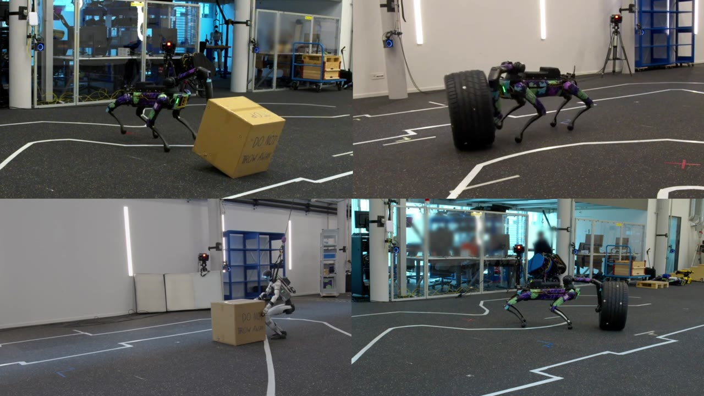
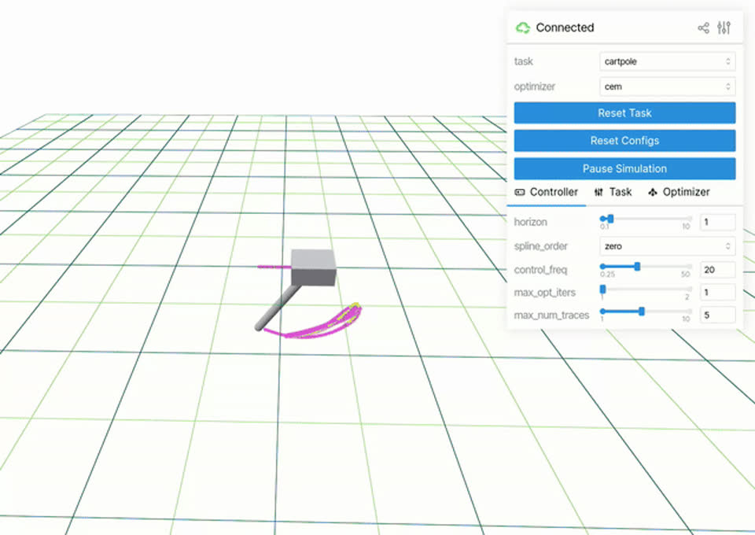
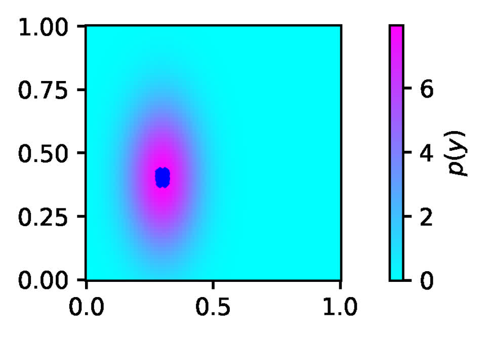
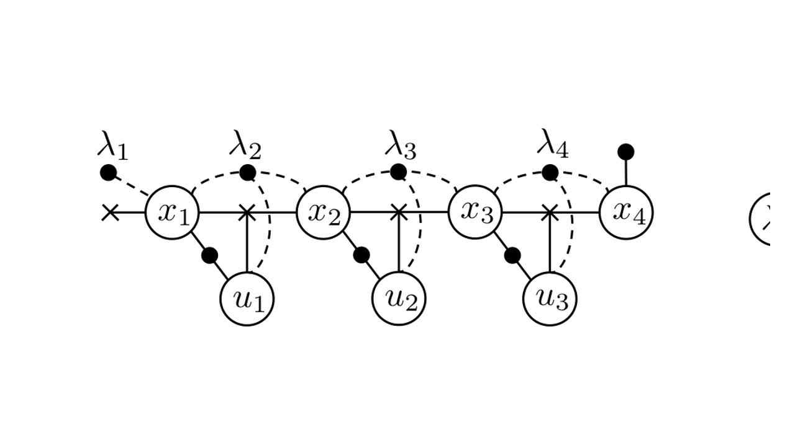

Duy-Nguyen Ta
Roboticist · Robotics & AI Institute
I am a roboticist at the Robotics & AI Institute (RAI, formerly the Boston Dynamics AI Institute), where I work on whole-body loco-manipulation for the Boston Dynamics Spot robot — combining sampling-based model-predictive control, reinforcement learning, and policy learning, together with the large-scale simulation, data, and deployment infrastructure that makes them work on real hardware.
Before RAI, I spent five years at Toyota Research Institute working on perception for dexterous manipulation on the team led by Prof. Russ Tedrake, led perception at Outrider, and built the visual SLAM backend that shipped on the iRobot Roomba 980. I received my Ph.D. from Georgia Tech, where I worked with Prof. Frank Dellaert on factor-graph methods that unify perception and optimal control for autonomous flight. In an earlier life, I built augmented-reality systems at Nokia Research Center and mixed-reality art installations in Singapore.
If my Vietnamese name looks hard to pronounce, it is roughly “Zwee” (Duy) and “Nwin” (Nguyen) — and here is how not to say it.
News
- Martin Schuck’s paper on learning loco-manipulation from SMPC demonstrations with sparse offline-to-online RL was accepted to CoRL 2026. [arXiv]
- John Z. Zhang’s Sumo was presented at the RSS 2026 Workshop on Whole-Body Control and Manipulation. [project]
- Hongyu Li’s NovaFlow was accepted to ICRA 2026. [project]
- We open-sourced judo, a user-friendly framework for sampling-based MPC. [code]
- Yun Chang’s ASHiTA, automatic scene-grounded hierarchical task analysis, appeared at CVPR 2025. [arXiv]
- I joined the Robotics & AI Institute (then the Boston Dynamics AI Institute).
Selected Projects
Whole-body loco-manipulation and robot learning at the Robotics & AI Institute, plus favorite first-author work from earlier chapters.

Loco-Manipulation from SMPC Demonstrations
Sampling-based MPC acts as an automated expert generating massive offline datasets in simulation; sparse offline-to-online RL then distills robust loco-manipulation policies, deployed on an arm-equipped Spot and a Unitree G1 humanoid. Led by Martin Schuck (TUM/ETH) with our team at RAI.

Sumo: Dynamic Whole-Body Loco-Manipulation
Test-time steering of a pre-trained whole-body RL policy with a sampling-based planner lets Spot upright, roll, drag, and stack 15 kg tires — and adapt to new objects and tasks at deployment without retraining. I support this work with GPU-parallel SMPC data generation (MuJoCo Warp), training infrastructure, and on-robot deployment tooling.

judo: Sampling-Based MPC Made Easy
A user-friendly Python framework for prototyping, benchmarking, and deploying sampling-based MPC controllers: MuJoCo physics, asynchronous execution for sim-to-hardware transfer, and an interactive tuning GUI. I co-maintain the package and its MuJoCo Warp integration for massive GPU-parallel rollouts.

Conditional EBMs for Implicit Policies
Why are implicit, energy-based behavior-cloning policies so hard to train? My last project at TRI, with Russ Tedrake’s team (since spun out as Walden Robotics), documented the gap between EBM theory and practice through many failed experiments — the very training pathologies that Diffusion Policy, born at TRI that same summer, sidesteps with denoising diffusion.

The TRI Dish-Loading Demo
TRI’s flagship manipulation demo: a robot perceiving and loading dishes in a real kitchen sink, used as a testbed for the hard problems of reliable manipulation. I led the perception team — deep-learned probabilistic object pose estimation in clutter, multicamera and hand-eye calibration, and depth-based object tracking.

Pose-Graph Sparsification for Lifelong SLAM
Lifelong mapping on a consumer robot means the pose graph grows without bound, and marginalizing old nodes creates dense, expensive cliques. This fast, near-optimal nonlinear approximation of node marginalization and edge sparsification keeps long-term graph SLAM tractable on tiny embedded processors like the Roomba’s.

SQP on Factor Graphs: Estimation Meets Control
Extending factor graphs from estimation to constrained optimal control: system dynamics, discretized by integration on Lie-group manifolds, enter the graph as hard constrained factors, and an SQP formulation solves the result — revealing an elegant duality between primal and dual factor graphs.
Earlier Work
Autonomous Flight — Georgia Tech (2011–2014)
Perception and optimal control for autonomous navigation on micro aerial vehicles, with Prof. Frank Dellaert.
Mobile Augmented Reality — Georgia Tech & Nokia Research (2007–2010)
Mixed-Reality Art & Entertainment — Singapore (2003–2007)
Publications
- Learning Loco-Manipulation From SMPC Demonstrations With Sparse Offline-to-Online RL
M. Schuck, M. Sorokin, S. Manni, D. Ta, A.P. Schoellig, M. Hutter, S. Le Cléac’h, J. Brüdigam. CoRL, 2026. arXiv - Sumo: Dynamic and Generalizable Whole-Body Loco-Manipulation
J.Z. Zhang, M. Sorokin, J. Brüdigam, B. Hung, S. Phillips, D. Yershov, F. Niroui, T. Zhao, L. Fermoselle, X. Zhu, C. Cao, D. Ta, T. Pang, J. Wang, P. Culbertson, Z. Manchester, S. Le Cléac’h. Presented at the RSS 2026 Workshop on Whole-Body Control and Manipulation. arXiv · project - NovaFlow: Zero-Shot Manipulation via Actionable Flow from Generated Videos
H. Li, L. Sun, Y. Hu, D. Ta, J. Barry, G. Konidaris, J. Fu. ICRA, 2026. arXiv · project - ASHiTA: Automatic Scene-grounded HIerarchical Task Analysis
Y. Chang, L. Fermoselle, D. Ta, B. Bucher, L. Carlone, J. Wang. CVPR, 2025. arXiv - Zero-shot Object-Centric Instruction Following: Integrating Foundation Models with Traditional Navigation
S. Raychaudhuri, D. Ta, K. Ashton, A.X. Chang, J. Wang, B. Bucher. arXiv preprint, 2024. arXiv - Conditional Energy-Based Models for Implicit Policies: The Gap Between Theory and Practice
D.N. Ta, E. Cousineau, H. Zhao, S. Feng. RSS 2022 Workshop on Implicit Representations for Robotic Manipulation. arXiv - Fast Nonlinear Approximation of Pose Graph Node Marginalization
D.N. Ta, N. Banerjee, S. Eick, E. Pittore, S. Lenser. ICRA, 2018. DOI - Differential Dynamic Programming for Optimal Estimation
M. Kobilarov, D.N. Ta, F. Dellaert. ICRA, 2015. PDF - Linear-Time Estimation with Tree Assumed Density Filtering and Low-Rank Approximation
D.N. Ta, F. Dellaert. IROS, 2014. PDF - A Factor Graph Approach to Estimation and Model Predictive Control on Unmanned Aerial Vehicles
D.N. Ta, M. Kobilarov, F. Dellaert. ICUAS, 2014. PDF - Vistas and Parallel Tracking and Mapping with Wall-Floor Features: Enabling Autonomous Flight in Man-made Environments
D.N. Ta, K. Ok, F. Dellaert. Robotics and Autonomous Systems, 2014. PDF - Monocular Parallel Tracking and Mapping with Odometry Fusion for MAV Navigation in Feature-Lacking Environments
D.N. Ta, K. Ok, F. Dellaert. IROS’13 Workshop on Vision-based Closed-Loop Control and Navigation of Micro Helicopters in GPS-denied Environments, 2013. - Saliency Detection and Model-based Tracking: A Two-Part Vision System for Small Robot Navigation in Forested Environments
R. Roberts, D.N. Ta, J. Straub, F. Dellaert. SPIE Defense, Security, and Sensing, 2012. PDF - Attitude Heading Reference System with Rotation-Aiding Visual Landmarks
C. Beall, D.N. Ta, K. Ok, F. Dellaert. FUSION, 2012. PDF - Vistas and Wall-Floor Intersection Features: Enabling Autonomous Flight in Man-made Environments
K. Ok, D.N. Ta, F. Dellaert. IROS Workshop on Visual Control of Mobile Robots, 2012. PDF - SURFTrac: Efficient Tracking and Continuous Object Recognition Using Local Feature Descriptors
D.N. Ta, W.C. Chen, N. Gelfand, K. Pulli. CVPR, 2009. (Oral, 5% acceptance rate) DOI - Art of Defense: A Collaborative Handheld Augmented Reality Board Game
D.N. Ta, K. Raveendran, Y. Xu, K. Spreen, B. MacIntyre. ACM SIGGRAPH Symposium on Video Games, 2009. DOI - Free Network Visible Network
C. Boj, D. Diaz, D.N. Ta, W. Liu, A.D. Cheok. ISEA06, 2006. - Age Invaders: Social and Physical Inter-Generational Family Entertainment
E.T. Khoo, S.P. Lee, A.D. Cheok, D.N. Ta. Springer Virtual Reality, VR-based Edutainment, 2006. - Social and Physical Interactive Paradigms for Mixed-Reality Entertainment
A.D. Cheok, K.S. Teh, D.N. Ta, Q.T.C. Tran, S.P. Lee, W. Liu, C.C. Li, D. Diaz, C. Boj. ACM Computers in Entertainment, 2006. - Real Time 3D Human Capture System for Mixed-Reality Art and Entertainment
D.N. Ta, Q.T.C. Tran, K. Xu, A.D. Cheok, et al. IEEE Transactions on Visualization and Computer Graphics, 2005. DOI - Magic Land: A 3D Human Capture Mixed Reality System for Museum Experiences
Q.T.C. Tran, D.N. Ta, A.D. Cheok, et al. Int’l Workshop: Re-Thinking Technology in Museums, 2005. - Magic Land: Live 3D Human Capture Mixed Reality Interactive System
Q.T.C. Tran, D.N. Ta, A.D. Cheok, et al. CHI’05 Extended Abstracts, 2005. - Searching the Web: A Semantics-Based Approach
T.H. Cao, D.N. Ta, Q.T.C. Tran. HPSC, 2003.
Patents
- Systems, devices, and methods for generating a pose estimate of an object
with K. Hashimoto, E.A. Cousineau, R.L. Tedrake. US Patent 11308314, 2022. - Systems and methods for calibrating a depth-IR image offset
with A. Alspach, N.S. Kuppuswamy. US Patent 10628968, 2020. - Method, apparatus, and computer program product for object tracking
with W.-C. Chen, N. Gelfand, K. Pulli. US Patents US20100232643 A1 (2009), US8818024 B2 (2014).